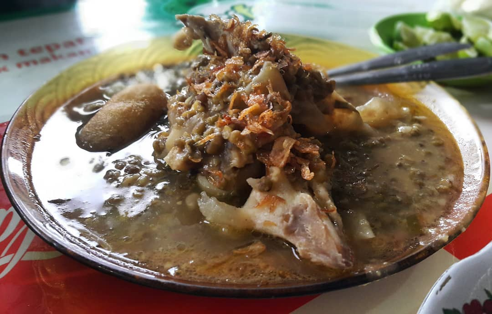
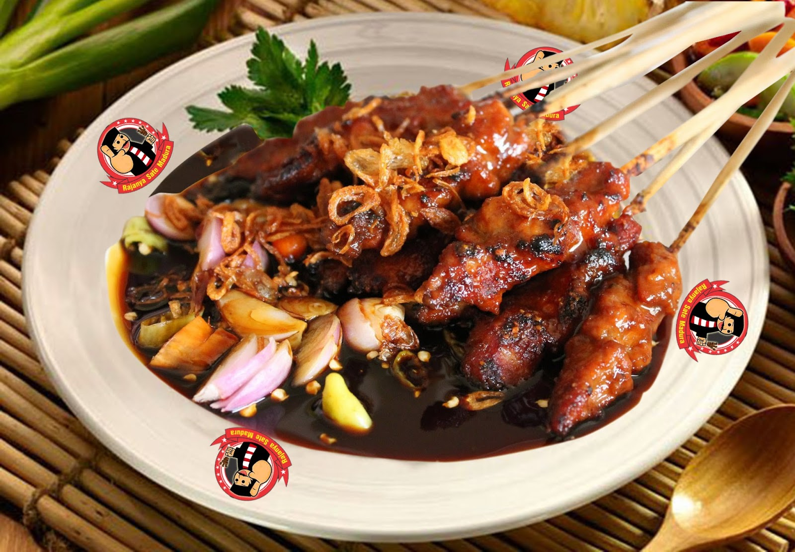

1. Kaldu Kokot yang bikin melotot

Bukan melotot karena marah, tapi karena kenikmatan yang tiada tara. Bayangkan, kamu akan menikmati menu khas Madura dengan kacang hijau yang dimasak dengan kaldu daging dan sumsum atau kikil sapi beserta tulangnya. Dari aromanya, kamu bisa menikmati betapa gurihnya masakan ini. Belum tampilan tulang sapi beserta sumsumnya yang memikat hati. Dengan kuah kaldu berlemak, kental dan berasa nikmat, ditambah daging dengan tekstur lembut yang sedap, kamu tidak akan bisa melupakan masakan ini. Ingin mencobanya, kamu bisa menuju ke Depot Kaldu Al Ghazali di Jalan Diponegoro, Sampang, yang seporsinya dihargai mulai dari 40,000 IDR.
2.sate madura

Makanan khas Madura yang pertama akan dibahas adalah Sate Madura. Siapa yang tidak kenal dengan penganan yang satu ini. Jika berbicara tentang sate, maka semua orang pasti tertuju pada sate Madura tersebut.
Bahan sate yang digunakan cukup beragam, ada yang terbuat dari daging ayam, daging sapi atau daging kambing. Sedangkan untuk bumbu sate tersebut, terbuat dari bahan kacang, kecap, yang ditambah dengan beberapa jenis bumbu lainnya.
Daging yang telah dipotong kecil-kecil akan ditusuk menggunakan bambu berukuran kecil, kemudian dipanggang di atas bara api, setelah setengah matang, kemudian diolesi bumbu kemudian dipanggang kembali.
Setelah matang angkat, dan tuangkan bumbu di atas sate tersebut. Makanan yang satu ini paling enak jika dikonsumsi selagi hangat bersama lontong.